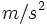

![[Main Page]](../../rsrc/bci2000logo.svg)
WiimoteLogger
Contributions
Synopsis
A filter that records state information from Nintendo Wii Remotes into state variables.
Location
http://www.bci2000.org/svn/trunk/src/contrib/Extensions/WiimoteLogger
Versioning
Authors
Griffin Milsap (griffin.milsap@gmail.com), Jeremy Hill (jezhill@gmail.com).
Version History
06/09/2011: Initial public release;
Source Code Revisions
- Initial development: 3318
- Tested under: 3318
- Known to compile under: 3318
- Broken since: --
Todo
- Wii MotionPlus Integration
- Testing with new Wii Remote Plus controllers
- Integration of other peripherals such as balance board or guitar
Functional Description
This extension enables up to four Nintendo Wii Remotes to be used with BCI2000. In order to collect state data from the Wii Remote (Wiimote), it must be on and connected before BCI2000 is started (see Connecting the Wiimotes below). Wiimotes may not be connected while in the vicinity of a running Nintendo Wii Game Console. The Wiimote is polled at a maximum of 100 Hz and a maximum of four Wiimotes can be connected at a time. The Wiimote updates asynchronously from the BCI2000 system clock. Wiimote numbers can be determined via the LEDs at the bottom of the Wiimote. In order to record infrared values, the black window on the front of the remote must be pointed at a source of IR light (IR LEDs, candles, remote controllers, etc). The infrared camera viewing angle is about 45 degrees. Currently, BCI2000 does not support extensions such as the Nintendo Wii Remote Nunchuck extension or the Nintendo Wii Remote Classic Controller Extension. Support is planned for the MotionPlus extension. The module has not been tested with the new Nintendo Wii Remote Plus controller with integrated MotionPlus capabilities.
On the Wii MotionPlus
The Wii MotionPlus is a device which contains three gyroscopes and can be plugged into the bottom of the Wiimote. The output from the gyroscopes report the orientation of the Wiiremote very accurately and when used in combination with the accelerometer values, the three-space position of the remote can be quite accurately tracked. When the MotionPlus is integrated into the module, three more states will be added corresponding to these gyroscope values.
Integration into BCI2000
Compile the extension into your source module by enabling contributed extensions in your CMake configuration. You can do this by going into your root build folder and deleting CMakeCache.txt and re-running the project batch file, or by running cmake -i and enabling BUILD_WIIMOTELOGGER.
Once the extension is built into the source module, enable it by starting the source module with the --LogWiimote=1 command line argument. The module will attempt to use the connected Wiimotes at Publish() time. States for Wiimotes will start with Wiimote# where# indicates the number of the Wiimote, starting at 1 and going up to 4. The LED lights at the bottom of the Wiimote indicate Wiimote numbering.
Connecting the Wiimotes
The process to connect the Wiimotes varies depending on what stack is currently installed. The recommended stack is BlueSoleil, but BCI2000 is confirmed to work with the WIDCOMM stack, and the default MS stack as well.
As far as Bluetooth Hardware/Stack configurations, there is no sure bet. Certain combinations of hardware and software have worked reliably, but some hardware/software configurations simply will not work. This is due to Nintendo's half-adoption of the Bluetooth standard. If you have any questions about what dongle or stack to use, reference this page: http://wiibrew.org/wiki/List_of_Working_Bluetooth_Devices
For ease in identifying remotes, record the unique Bluetooth address of each Wiimote and write it on the inside of the battery cover. The Bluetooth address can be found by right clicking the device within "Bluetooth Places" and selecting "Properties". The Bluetooth address is in hex format: ##:##:##:##:##:##. If you're using Bluesoleil, you can locate the device you're looking for by hovering over the icon to reveal the tool tip and match up the Bluetooth device addresses.
In order to connect the Wiimotes with some other Bluetooth stack not documented here, refer to the documentation provided with your stack software on how to connect new devices. In order to put the Wiimote into "discoverable mode", press the buttons labelled "1" and "2" simultaneously. Unless the buttons are held, the device will only remain discoverable for 20 seconds, so the connecting process must take less than 20 seconds or the buttons will need to be held during the process. Wiimotes cannot be paired with a computer. If your stack requires pairing to occur, your stack is incompatible with connecting to the Wiimotes. In order to connect, consider installing the BlueSoleil stack as it is compatible with most Bluetooth devices and has the easiest interface.
To turn off the Wiimotes, hold the power button in the upper corner of the front face of the Wiimote for a few seconds. In order to tell if the Wiimote is off, press the A or B button. If the lights at the bottom of the remote light up for a short time, you have successfully turned off the remote. If the remote is left connected to the PC, it will consume battery power until the batteries are dead, or the device is disconnected.
MSAutoConnectWiimotes
This is a command-line tool which can auto connect Wiimotes to the MS Stack. This tool can only be used with the standard MS Stack. It is added to your CMake project when you enable building of the Wiimote extension into your source modules with the BUILD_WIIMOTELOGGER CMake variable enabled. Once built, the tool resides in the tools/ directory as MSAutoConnectWiimotes. This program is not needed to connect Wiimotes using the MS Stack, but does simplify the process and enables auto-connecting when BCI2000 starts through use of the operator scripting engine.
To use the program, enable your bluetooth connection, and run the application. Hit the "1" and "2" buttons simultaneously in order for each Wiimote you want to connect. Close the application once you've connected as many Wiimotes as you want.
Connecting with BlueSoleil
To connect the Wiimote(s) for the first time with BlueSoleil:
- Ensure your Bluetooth radio is on or your Bluetooth dongle is plugged into the USB port, and drivers are installed and functional.
- Right click the Bluetooth icon in the task bar near the system clock.
- Select "Explore Bluetooth Places"
- Double click "Search Devices"
- Press buttons labelled "1" and "2" on the Wiimote simultaneously (you need not hold the buttons). The Wiimote's LEDs will flash and the Wiimote will be in "discoverable mode" for 20 seconds. Make sure that any Nintendo Wii game consoles in the area are turned off or the Wiimote will preferentially pair with the console.
- When the "HID Device" is found (icon shows up as a joystick), double click the icon and the software will automatically connect with the device.
- If the process has been performed successfully, the Wiimote's LEDs will continue to blink and will not stop blinking until BCI2000 has been started.
- Repeat for as many Wiimotes as desired (up to four)
To connect the Wiimotes later with BlueSoleil:
- Repeat steps 2-5 above
- Click the Wiimote icon which corresponds to the Wiimote you are trying to connect. If there are more than one, you'll just have to try them all until one works
Connecting with Toshiba Stack
- Ensure your Bluetooth radio is on or your Bluetooth dongle is plugged into the USB port, and drivers are installed and functional.
- Open Bluetooth Settings
- Click on Bluetooth->Add a new connection. Choose Express Mode
- Press the buttons labelled "1" and "2" on the Wiimote at the same time to put it into "discoverable mode". If it recognizes the Wiimote, it'll be named NINTENDO-RVL-CNT-01.
- Follow remaining steps to finish the "Add New Connection Wizard."
- Right click on the Wiimote's icon and click "Connect".
Connecting with WIDCOMM Stack
- Ensure your Bluetooth radio is on or your Bluetooth dongle is plugged into the USB port, and drivers are installed and functional.
- Right click the Bluetooth icon in your System Tray and click "Bluetooth Setup Wizard"
- Select the second option, "I want to find a specific Bluetooth Device and configure how this computer will use its services" and click next.
- Press the buttons labelled "1" and "2" on the Wiimote at the same time to put it into "discoverable mode". (You may want to wait a few seconds before doing this, as the wizard takes a while to complete and the Wiimote must be discoverable for the entire setup.)
- When the Wiimote appears in the discovered devices list select it and click next. Already connected devices show a green icon in the bottom left of the device icon.
- Click "Skip Pairing"
- Wait for the wizard to get available services from the device, and once the "HID Device" service appears, click "Finish"
Parameters
The Wiimote is configured in the Source tab within the WiimoteLogger section. The configurable parameters are:
LogWiimote= checked/unchecked, enables logging of Wiimote statesLogWiimoteIR= checked/unchecked, enables logging of IR specific Wiimote statesWiimoteDeriv= checked/unchecked, Check to measure changes in accelerometer readings and uncheck to report raw acceleromter values.
State Variables
All states are prefixed with a Wiimote# where # corresponds to the Wiimote which the state was polled from.
AccelX, AccelY, AccelZ
These are the raw acceleration values from the Wiimote. These values do not take acceleration due to gravity into account - as such, when the remote is resting on a table, there will be a downward acceleration of 9.8 . If WiimoteDeriv is checked, these values become the change in acceleration. In this case, a resting Wiimote should read 0 for all of these states. Each value is 16 bit and ranges from 0 to 65535. The Wiimote only outputs 8 bits of resolution for each of these states, so there are 255 discrete values of acceleration for each of these states which are then scaled to 0-65535.
IRX, IRY
These are IR values from 0 to 65535. These values are acquired only if LogWiimoteIR is enabled and the black window on the front of the Wiimote (IR camera) is pointed at a source of IR light. Pictured as looking at the scene from the position of the camera looking the same direction as the camera, (65535,65535) is the farthest upper left corner of the field of view and (0,0) is the farthest lower right of the field of view. NOTE: If IR leaves the camera view, the state will hold the current value until found again. The IR looks at up to 4 dots at a time, so the states report the averaged center of the found dots.
Buttons
There are individual states for each button on the controller. They are set equal to "1" if the button is currently pushed down, otherwise they remain "0". The buttons available through BCI2000 are named according to the labelling on the controller and are listed below:
ButtonAButtonBButtonMinusButtonPlusButtonHomeButton1Button2ButtonUpButtonDownButtonLeftButtonRight
Special Note on Licensing
The WiimoteLogger extension uses a library called "WiiYourself" - http://wiiyourself.gl.tter.org/. The author of the library released it openly, but not under any standard open source license. Instead, he wrote his own license file located in our distribution at http://www.bci2000.org/svn/trunk/src/contrib/Extensions/WiimoteLogger/extlib/WiiYourself/License.txt. One thing to note is that he explicitly forbids use of the library for either direct or indirect military research. If you've got any questions or concerns about his terms, you can email him at gl.tter - at - r-i-l.net, (Remove the - at -, replace with @). He's a pretty reasonable guy.